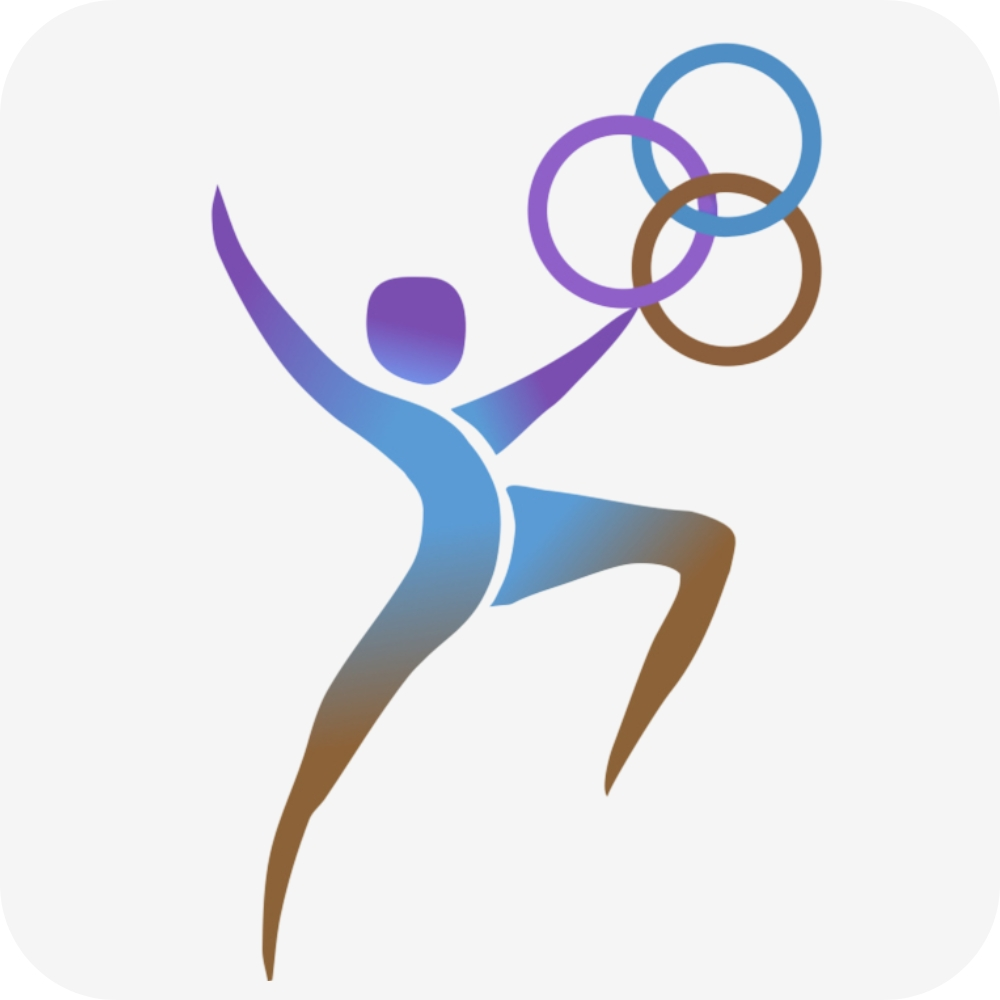

Physio Synergie steht für eine Therapieform, die den ganzen Menschen sieht. Unsere Arbeit verbindet schulmedizinisches Fachwissen mit wirkungsvollen Heilmethoden – immer individuell auf Ihre Situation abgestimmt.
Florina Frunza BSc ist staatlich anerkannte Physiotherapeutin mit über 25 Jahren Erfahrung. Als Mutter zweier Kinder bringt sie nicht nur medizinische Kompetenz, sondern auch viel Menschlichkeit, Geduld und Einfühlungsvermögen mit in jede Behandlung ein. Sie lebt seit über einem Jahrzehnt in Österreich und betreut Patient:innen in mehreren Sprachen – Deutsch, Rumänisch, Italienisch und Englisch.
Ihr Ansatz ist ganzheitlich: Körper, Geist und Seele bilden für sie eine untrennbare Einheit. Beschwerden werden nicht nur auf physischer Ebene betrachtet, sondern im gesamten Lebenskontext verstanden und behandelt. Das Ziel: nachhaltige Gesundheit, die sich spürbar im Alltag zeigt.
Unsere Praxis befindet sich im Medcenter Nord, Fischeraustraße 13/1, 8051 Graz. Termine sind mit und ohne ärztliche Überweisung möglich – auch Hausbesuche bieten wir gerne an.
Ob akute Beschwerden, chronische Schmerzen oder der Wunsch nach langfristigem Wohlbefinden – bei uns sind Sie in guten Händen.
Lymphdrainage ist eine sanfte manuelle Technik, die das Lymphsystem anregt. Sie hilft besonders bei Schwellungen nach Operationen oder bei Lymphstauungen, z. B. nach Krebsbehandlungen.
Beim ersten Termin erfolgt eine genaue Anamnese und Befunderhebung. Danach wird gemeinsam ein individueller Therapieplan erstellt – abgestimmt auf Ihre Beschwerden und Ziele.
Für Kassenabrechnungen benötigen Sie eine ärztliche Überweisung. Privatleistungen können auch ohne Überweisung in Anspruch genommen werden.
Unsere Praxis steht allen offen – Kinder, Jugendliche, Erwachsene und Senioren. Auch Hausbesuche in Graz sind nach Absprache möglich.
Wir freuen uns darauf, Sie persönlich kennenzulernen. Rufen Sie uns an oder schreiben Sie uns – wir melden uns zuverlässig bei Ihnen zurück.
Telefon: +43 681 205 20482
E-Mail: physiosynergie10@gmail.com
Adresse: Fischeraustraße 13/1, 8051 Graz
Öffnungszeiten: Montag–Freitag, 08:00–18:00 Uhr